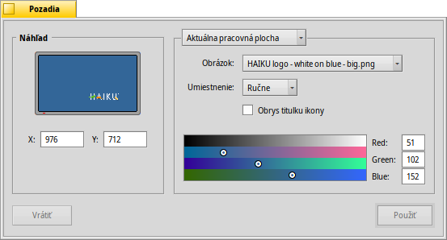

Pozadia
Pozadia
| Panel: | ||
| Umiestnenie: | /boot/system/preferences/Backgrounds | |
| Nastavenia: | ~/config/settings/system/app_server/workspaces ~/config/settings/Backgrounds settings - ukladá pozíciu okna panelu |
Môžete nastaviť farbu alebo obrázok ako pozadie pre každý súbor a Plochu pre každú pracovnú plochu.
Horné menu špecifikuje, či sa vami vykonané zmeny budú aplikovať iba na aktuálnu pracovnú plochu, všetky pracovné plochy, konkrétny priečinok alebo či budú predvolené pre každý nový priečinok.
Pod tým môžete priradiť obrázok alebo nevybrať ak chcete mať jednofarebné pozadie. Obrázky môžete tiež pretiahnuť myšou do okna náhľadu vľavo.
Ak použijete obrázok, musíte rozhodnúť o jeho umiestnení:
| umožní vám špecifikovať súradnice. Môžete buď umiestniť obrázok v okne náhľadu, alebo zadať X a Y ručne | ||
| umiestní obrázok do stredu obrazovky. | ||
| zväčší obrázok bez ohľadu na jeho pomer strán, až kým nezaplní celú obrazovku. | ||
| vydláždi obrazovku obrázkom. |
Nastavenie vytvorí tenký obrys okolo titulkov ikon.
Či je farba titulku ikony biela alebo čierna závisí na nastavení pomocou výberu farieb. Tmavá farba nastaví biely text, bledá nastaví čierny. Keď teda nastavíte veľmi svetlý obrázok ako pozadie, mali by ste vo výberi farieb nastaviť svetlú farbu, aby boli titulky ikon dobre čitateľné - čierne. (Alebo nastavte možnosť obrysu popísanú vyššie.)
Vybraná farba bude taktiež zobrazená v aplete Pracovné plochy, ktorý ignoruje obrázky ako pozadia.
| vráti nastavenia, ktoré boli aktívne v momente spustenia nastavení pozadia. | ||
| aplikuje zmeny, ktoré ste vykonali. |